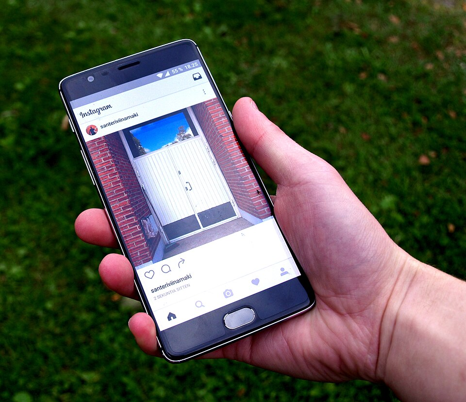
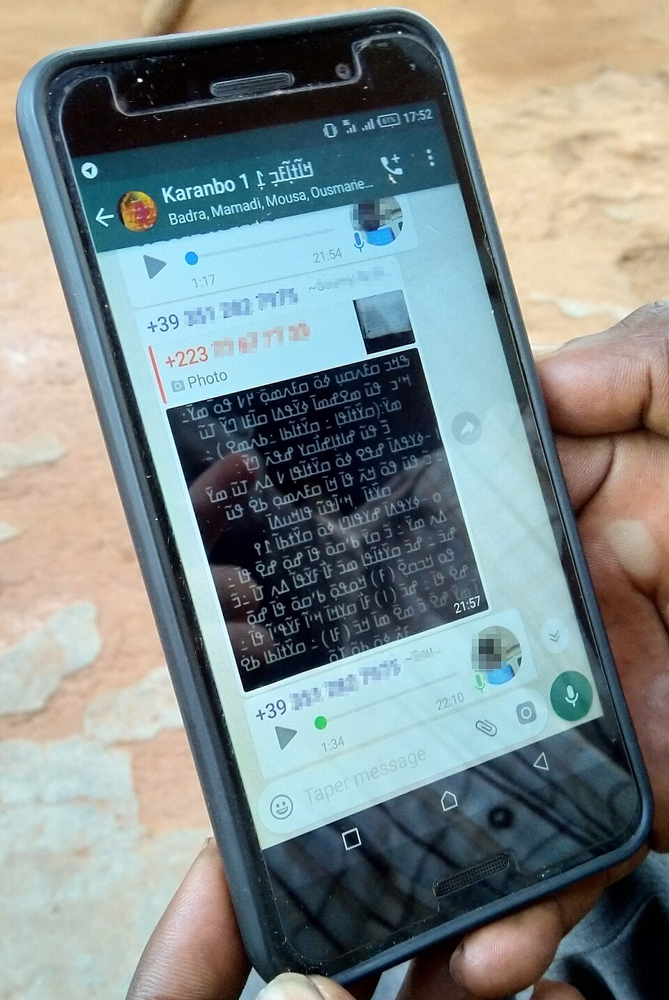
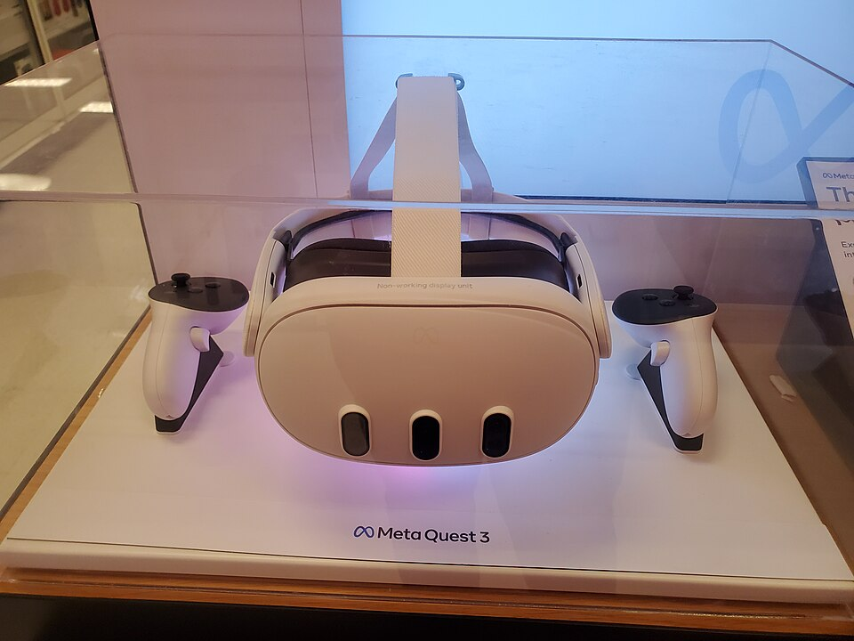

설립연도
2004년

페이스북, 인스타그램, 왓츠앱, 스레드처럼 세계에서 가장 많은 사람이 쓰는 소셜미디어 앱들을 운영하는 회사예요. 매출은 거의 다 이 앱들에 붙는 광고에서 나와요. 가상·증강현실 기기(퀘스트, 스마트 안경)를 만드는 리얼리티 랩스에도 큰돈을 쓰고 있는데, 이 부문은 아직 손실이 커요.
칸에 마우스를 올리거나 누르면 자세한 설명을 볼 수 있어요.

페이스북, 인스타그램, 스레드에 사용자 맞춤 광고를 보여 주고 돈을 벌어요. 매출의 거의 전부가 광고예요.
대표 예페이스북, 인스타그램, 스레드

왓츠앱과 메신저는 수십억 명이 쓰는 메시지 앱이에요. 기업이 고객과 대화할 때 내는 요금 등으로 돈을 벌기 시작했어요.
대표 예왓츠앱, 메신저
모든 앱에 AI 비서 메타 AI를 넣고, AI 데이터센터에 매년 큰돈을 투자해요. 2026년 4월 새 AI 연구 조직(메타 초지능 연구소)의 첫 모델 '뮤즈 스파크'를 공개했고, 9월에는 사람 대신 여러 일을 처리해 주는 개인 AI 비서 '뮤즈'를 내놓았어요. 뮤즈는 무료와 유료 구독(월 20·100달러)으로 미국에서 먼저 시작했어요.
대표 예메타 AI, 뮤즈, 뮤즈 스파크, 라마 모델

가상현실(VR) 헤드셋 퀘스트와 카메라가 달린 스마트 안경을 만들어요. 미래를 위한 투자라 매년 큰 손실을 내고 있어요.
대표 예메타 퀘스트, 레이밴 메타 스마트 안경
원화 금액은 1달러 = 1,339.4원(2026년 11월 20일 유럽중앙은행 기준환율)으로 환산한 대략적인 값이에요.
| 기간 | 매출 | 영업이익 | 순이익 |
|---|
사업마다 겨루는 상대가 달라요